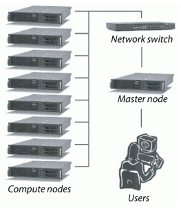
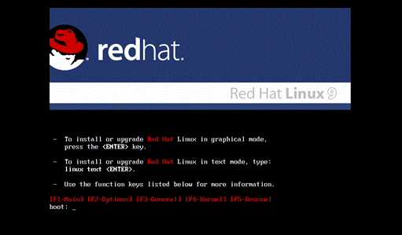
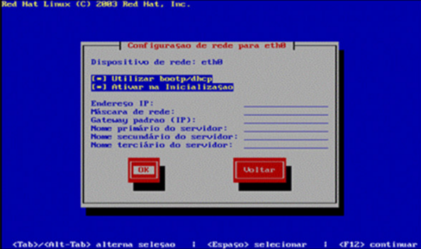
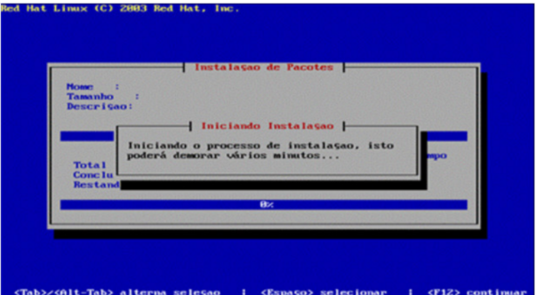

Aprenda o passo a passo para implementar um cluster
Implementando um Cluster
O que é cluster?
Cluster (ou clustering) é, em poucas palavras, o nome dado a um sistema que relaciona dois ou mais computadores para que estes trabalhem de maneira conjunta no intuito de processar uma tarefa. Estas máquinas dividem entre si as atividades de processamento e executam este trabalho de maneira simultânea.
Cada computador que faz parte do cluster recebe o nome de nó (ou node). Teoricamente, não há limite máximo de nós, mas independentemente da quantidade de máquinas que o compõe, o cluster deve ser "transparente", ou seja, ser visto pelo usuário ou por outro sistema que necessita deste processamento como um único computador.
A computação em cluster se mostra muitas vezes como uma solução viável porque os nós podem até mesmo ser compostos por computadores simples, como PCs de desempenho mediano. Juntos, eles configuram um sistema de processamento com capacidade suficiente para dar conta de determinadas aplicações que, se fossem atendidas por supercomputadores ou servidores sofisticados, exigiriam investimentos muito maiores.
Tipos de clusters
Há uma enormidade de aplicações que só podem ser atendidas satisfatoriamente com computação de alto desempenho: sistemas meteorológicos, ferramentas de mapeamento genético, simuladores geotérmicos, programas de renderização de imagens tridimencionais, entre tantos outros. Com o advento da computação em nuvens, este cenário se torna ainda mais amplo: pode-se ter uma infraestrutura tecnológica respondendo a vários clientes simultaneamente de maneira remota, por exemplo.
Cluster Beowulf
Um cluster do tipo Beowulf é considerado especificamente dedicado ao processamento paralelo e enquadra-se na taxonomia de Flynn como MIMD. Possuí uma arquitetura de diversos computadores formados por um nó controlador (frontend) e nós clientes (backends), interligados através de uma rede Ethernet ou outra tecnologia de rede qualquer, dedicada exclusivamente para a passagem de mensagens, com um sistema operacional que implemente estruturas PVM e/ou MPI, para realizar uma comunicação que otimize o processamento paralelo. O nó controlador tem como função controlar, monitorar e distribuir tarefas entre o cluster, além de atuar como um elo entre ele e os usuários.
Passo a passo para implementação física de um cluster Beowulf
Para implementação de um Cluster Beowulf são necessários 2 ou mais computadores, onde um é chamado de nó mestre ou controlador (com duas placas de rede, uma on board e outra off board) e os demais nós escravos – sendo todos ligados em rede através de um switch e utilizando sistema operacional Linux.
Computador mestre:
Processador AMD Athlon ™ XP 2600 +;
128 MB de memória RAM;
Gravadora de CD LG 8527B;
Placa de rede on-board VIA PCI 10/100Mb Fast Ethernet Adapter;
Placa de rede off-board Realtek RTL 8139 Family PCI Fast Ethernet NIC;
Disco rígido de 40Gb (somente 30Gb foram utilizados para o projeto);
Monitor de 15” VGA;
Mouse Microsoft PS/2;
Teclado de 120 teclas.
Computadores escravos:
• Quantidade: 02 (dois)
• 256 MB de memória RAM;
• Placa de rede on-board VIA PCI 10/100Mb Fast Ethernet Adapter;
• Placa de rede off-board Realtek RTL 8139 Family PCI Fast Ethernet NIC;
• Disco rígido de 40Gb (somente 30Gb foram utilizados para o projeto).
Instalação do RedHat:
Para efetuar a instalação, são utilizados os 3 cds do Red Hat Linux 9. Inserido o primeiro Cd – a tela inicial da instalação é mostrada, e iniciado o processo de Boot do Red Hat Linux 9, os seguintes procedimentos são necessários para instalação do sistema em modo texto para uma estação de trabalho:
- Iniciar o processo de instalação, digitando linux text, na frente da palavra boot (após isso, inicia-se o processo de carregamento do instalador do Red Hat Linux, conhecido como Anaconda e o reconhecimento do hardware do computador);
- Escolher o idioma de instalação do sistema Red Hat Linux (possui suporte ao português);
- Escolher o tipo de teclado (geralmente br-abnt 2);
- Escolher o tipo de mouse;
- Escolher o tipo de instalação que será usado (é recomendável escolher estação de trabalho);
- Particionar o disco rígido (Hard Disc, HD ou Winchester), de forma a criar a partição Raiz (o Red Hat Linux possui três formas de particionamento, sendo duas formas da própria distribuição e uma de uso comum, que é o fdisk. Por se tratar de uma instalação para uso pessoal, deve ser usado o Disk druid que é um particionador em modo gráfico);
- Definir o gerenciador de boot para o sistema Linux – lembrando que o gerenciador de boot é responsável pela tela exibida ao iniciar o sistema Red Hat Linux pela primeira vez, após a instalação, o mesmo pode ser usado para iniciar também outros sistemas operacionais;
- Definir os parâmetros que devem ser especificados no carregamento do sistema como suporte a dispositivo SCSI, Vídeo, etc.
- Configurar a rede, definindo as configurações para que a máquina possa acessar a rede e a internet
- Definir o nome da máquina, lembrando que o nome não pode existir na rede;
- Definir o fuso horário do país/região;
- Definir a senha do usuário root;
- Instalar o sistema, lembrando daqui para frente o processo segue por conta do sistema, com exceção da troca de mídias, durante o processo. início efetivo da instalação do Red Hat Linux 9.0.
Após a instalação de todos os pacotes, o sistema solicitará a criação de um disco de boot, o que é recomendável, mas é possível optar por não utilizá-lo, logo após o sistema apresentará uma tela informando a finalização do processo de instalação e será solicitado o reboot do sistema.
A configuração é feita a partir dos seguintes passos:
1. Configurar os endereços lógicos (IP) para o controlador mestre e os nós escravos;
2. Projetar um ambiente de resolução de nomes;
3. Criar um relacionamento de confiança entre as máquinas;
4. Permitir o uso de comandos remotos para colocar as aplicações em execução nos nós;
5. Configurar o servidor do Sistema de Arquivos (NFS - Network File System);
6. Promover a sincronização dos relógios dos nós através do NTP (Network Time Protocol).
A permissão para uso de comandos remotos pelo protocolo RSH e por algumas aplicações de monitoramento é concedida através do arquivo .rhost, localizado no diretório /root. Seguindo o formato:
mestre
escravo1
escravo2
O funcionamento ideal deste arquivo só ocorre com a liberação e habilitação do uso do rsh, rlogin e rcp ao usuário. Isto é feito através da adição das seguintes linhas no arquivo /etc/securetty:
rsh
rlogin
Em seguida, os serviços rsh, rlogin e rcp devem ser habilitados através do comando ntsysv, no terminal, e o xinetd deve ser reiniciado com o comando ./xinetd restart. Estes procedimentos são feitos em todas as máquinas.
Configurando o Servidor de Sistemas de Arquivos:
No computador mestre, adiciona-se ao final do arquivo /etc/exports o seguinte conteúdo:
/home *(rw,no_root_squash)
/usr/local *(rw,no_root_squash)
Onde: rw -> escrita e leitura;
no_root_squash -> privilégios de superusuário.
Para finalização desta tarefa, é necessária a reiniciação do serviço NFS em todos os nós do cluster, primeiramente no mestre. No terminal, deve ser executado:
cd /etc/rc.d/init.d
./nfs stop
./nfs start
ntsysv (Habilitação do servidor NFS automaticamente)
Configurando o Servidor de Tempo:
Em todos os nós é executado no terminal:
touch /etc/ntp.drift
No nó mestre, o arquivo /etc/ntp.conf é editado de forma a seguir o seguinte padrão:
server 127.127.1.0 prefer
fudge 127.127.1.0 stratum 0
driftfile /etc/ntp/drift
authenticate no
Enquanto nos nós escravos esse mesmo arquivo, /etc/ntp.conf segue como:
server 192.168.0.221
driftfile /etc/ntp/drift
authenticate no
E deve ser executado no terminal:
ntpdate 192.168.0.221
E por fim, em todos os nós, primeiramente no mestre, o daemon ntpd deve ser ativado executando no terminal o comando:
service ntpd start